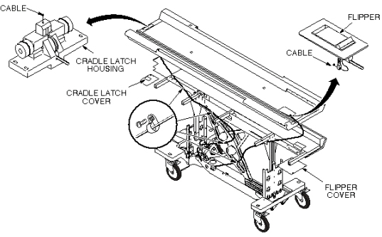
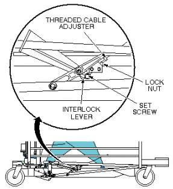
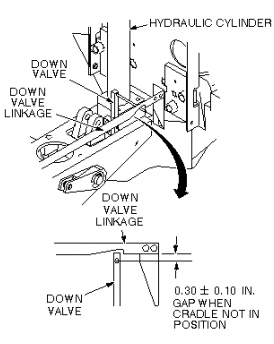

Operating Documentation
Direction 5133315-3, Rev# 14
Signa EXCITE HD 1.5T Service Methods
Module Version 2.0, Version Date 11/6/08
Operating Documentation |
| Required Persons | Preliminary Reqs | Procedure | Finalization |
|---|---|---|---|
| 1 |
Undock patient transport, and move it out of exam room.
Remove upper and lower side covers (see Illustration 1).
Illustration 1: REMOVAL OF PATIENT TABLE COVERS

Remove small cover below flipper assembly (see Illustration 2).
Illustration 2: INTERLOCK CABLE AND MAIN CRADLE LATCH CABLE ROUTING

Remove cradle (see Illustration 3).
Illustration 3: PATIENT TRANSPORT CRADLE REMOVAL

Loosen set screw at interlock lever.
Unfasten cable end from interlock lever.
Pull cable out of pin stop on flipper bar (see Illustration 4).
Insert new cable through head of pin stop so that swaged end fits into hole in pin stop (see Illustration 4).
Illustration 4: INTERLOCK CABLE AND MAIN CRADLE LATCH CABLE ROUTING
Route cable through cable casing and insert through hole in interlock lever.
Loop cable twice through hole in interlock lever and secure with set screw. Tighten securely to prevent cable from slipping (see Illustration 5).
Illustration 5: INTERLOCK LEVER

Adjust for indicated gap in down valve linkage when cradle is not in position. Use threaded cable adjuster for fine adjustments. Tighten lock nut after adjustment is completed, then cut off excess length of cable (see Illustration 6).
Illustration 6: DOWN VALVE LINKAGE ADJUSTMENT

Replace cradle and upper and lower side covers. Note position of Signa logo on outer covers and position toward front of table (see Illustration 1).
No finalization steps.